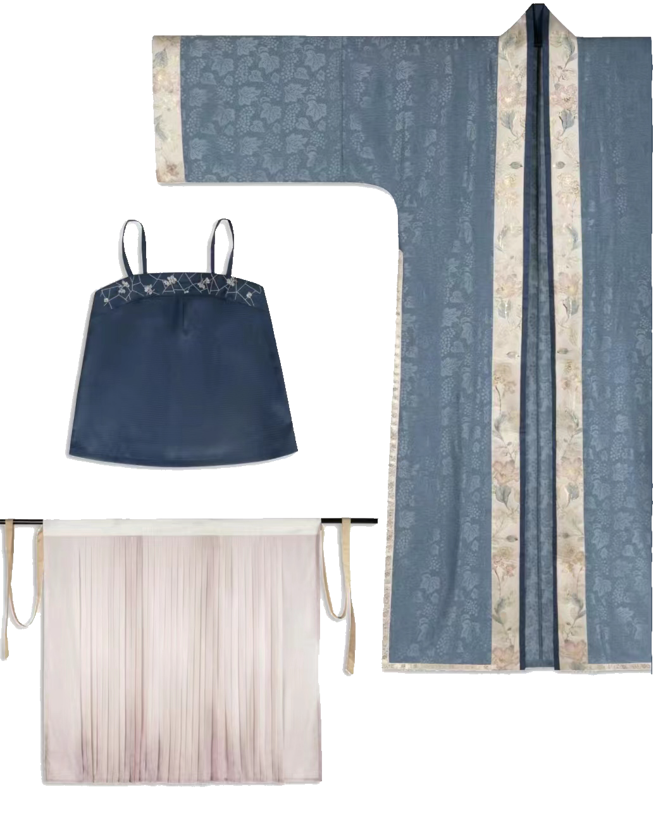

《
宋代女子的一般服饰
宋代女子的服装以襦、袄、衫、褙子为主，下身服装多为裙、裤。宋代女子的襦、袄都比较短小，但是颜色比较丰富，主要有红、紫、黄等颜色。衫是宋代女子最常用的上衣款式。宋代的女子穿用的褙子比较有特色。宋代的褙子从皇帝、官吏、商人、士人、仪卫到一般的男性女性都可穿。女子将褙子作为常服穿着。宋代的褙子一般为长袖、长衣身，在腋下开衩。在腋下有带子可以将前后襟系住，但一般不用只起装饰作用。褙子的领型有直领对襟式、斜领交襟式、盘领交襟式三种，女子一般穿直领对襟式的褙子。宋代女性还穿一种对襟旋袄，款式为对襟、窄半袖、长度过膝。
服饰变化的时代因素
宋代由于家具种类的发展，椅子、凳子的出现使人们从过去的座席、榻转变到垂足而坐，出门由乘马改为坐轿，生活节奏也逐渐加快。之前的裤子大多都是无裆的，无法适应新的生活方式，因此裤子的结构发生了变化，有裆的裤子更适合新的生活方式。按封建传统意识裤子是不能直接穿在外面的，宋代上层社会的女子在裤子外要加穿长裙遮挡。
》